조직도에 영업팀을 만들어 장진영 · 김민지 · 박서연을 추가합니다. 장진영을 부서장으로 정합니다. 「영업 제안서 작성」의 「영업 담당자」 역할은 김민지로 지정합니다. 실행 창에서 담당자를 확인한 뒤, 다음 장에서 실행합니다.
부서와 역할#
한빛오피스는 사무 가구를 판매하는 B2B 회사입니다. 독자는 영업팀장 장진영의 입장에서 실습합니다. 김민지는 영업 담당, 박서연은 재무 담당입니다.
4장에서 단계 이름을 고쳐 버전으로 저장했습니다. 이번에는 함께 일할 사람을 조직도에 넣고, 정의에서 역할 담당자를 정합니다.
부서는 조직도에서 사람을 묶는 단위입니다. 역할은 프로세스에서 맡는 일이며, 흐름도의 레인 하나가 역할 하나입니다. 김민지를 영업팀에 추가하는 작업과 「영업 담당자」 역할에 지정하는 작업은 별도로 진행합니다.
따라 하기 1 — 동료 계정 준비하기#
조직도에는 이미 가입한 계정을 추가할 수 있습니다. 김민지와 박서연이 먼저 같은 설치본에 가입해야 합니다.
- 장진영이 로그인한 창을 두고, 다른 브라우저나 시크릿 창에서
http://localhost:8088을 엽니다. - 「시작하기」를 누르고 「계정 생성」으로 이동합니다. 1장에서 사용한 가입 화면입니다.
- 김민지는 이름에
김민지, 이메일에minji@hanbit.example을 입력하고 비밀번호를 정해 가입합니다. - 박서연도 같은 주소의 「계정 생성」에서 이름
박서연, 이메일seoyeon@hanbit.example로 가입합니다. - 각 계정의 가입이 끝나면 「회원가입에 성공했습니다.」가 나오고, 해당 계정으로 로그인한 홈이 열리는지 확인합니다.
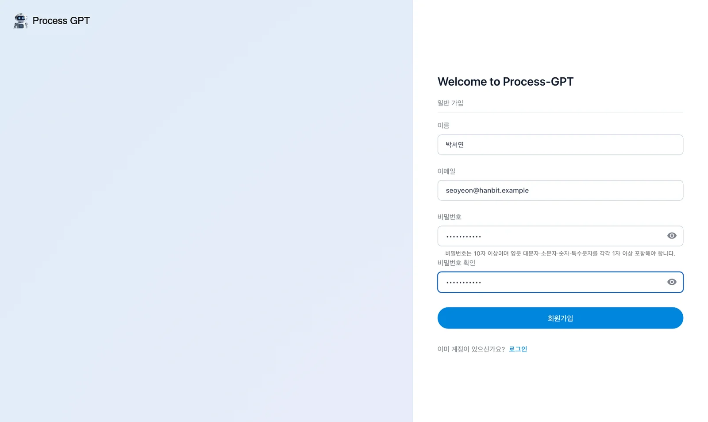
비밀번호 안내는 「비밀번호는 10자 이상이며 영문 대문자 · 소문자 · 숫자 · 특수문자를 각각 1자 이상 포함해야 합니다.」입니다. 다른 브라우저나 시크릿 창에서 가입하면 원래 창에서는 장진영의 로그인 상태가 유지됩니다. 조직도 실습은 장진영 창에서 이어갑니다.
미리 등록해 둘 수도 있습니다
조직도 위쪽의 「구성원 사전등록」으로 가입할 이메일과 부서를 미리 정해 두면, 해당 사용자는 가입하자마자 지정한 부서에 배치됩니다. 설정의 「사용자 관리」에 있는 「사용자 초대」는 초대 메일을 보내는 기능입니다. 로컬 설치본은 메일을 보내지 않으므로 이 실습에서는 동료가 직접 가입합니다(18장).
따라 하기 2 — 영업팀 만들기#
- 장진영 창에서 위쪽 막대의 「관리」를 누르고 「조직도 · 에이전트」를 고릅니다.
- 맨 위 숫자 줄이 「부서 0 · 구성원 0 · 미배치 3」인지 봅니다. 아래쪽 「미배치 인원 3명」에 김민지 · 박서연 · 장진영이 있습니다.
- 「부서 추가」를 누릅니다. 「localhost 아래에 새 부서를 만듭니다.」 창의 「부서명」에
영업팀을 입력하고 「추가」를 누릅니다. - 그림에서 「localhost」 아래에 「영업팀」 카드가 생기고, 오른쪽 위에 「저장됨」이 보이는지 확인합니다.
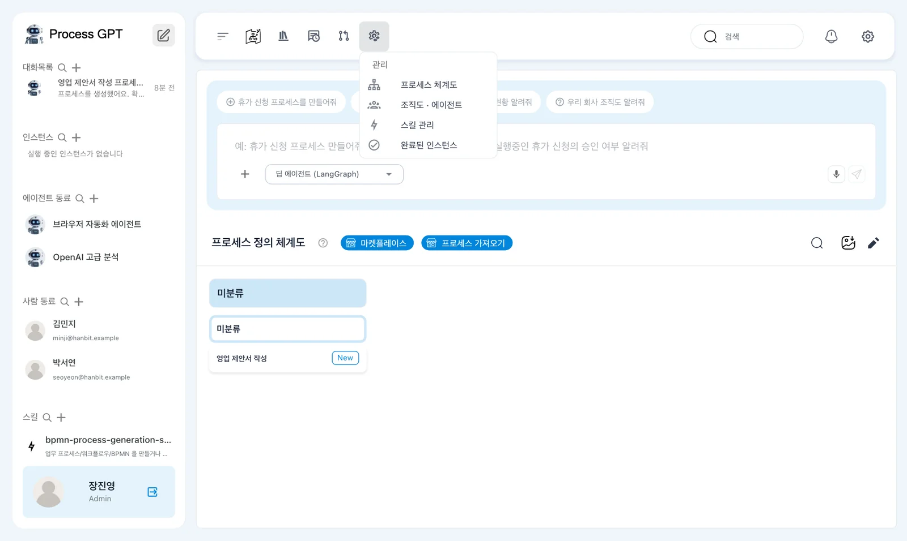
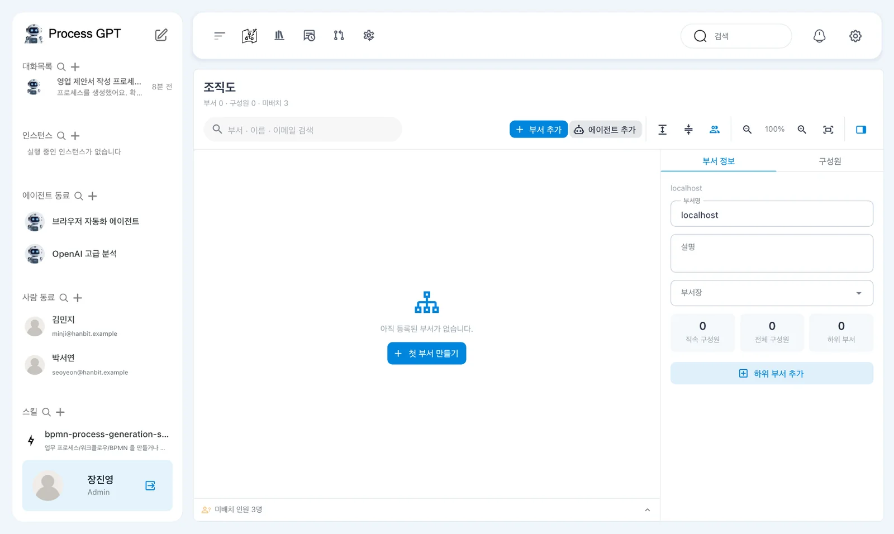
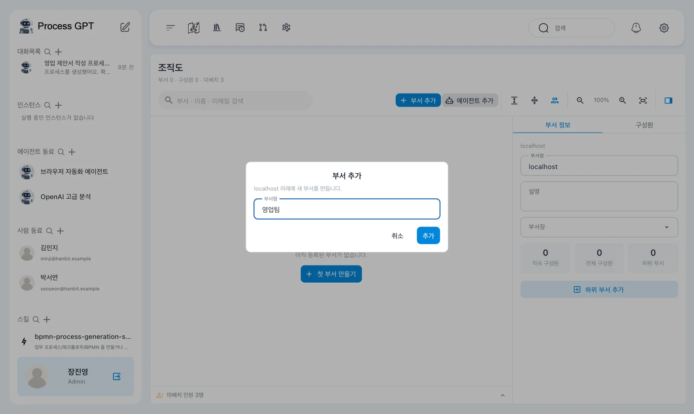
조직도는 변경할 때마다 자동으로 저장됩니다. 따로 「저장」 단추를 누르지 않습니다. 맨 위 「localhost」는 회사 이름 자리입니다. 「에이전트 추가」는 9장에서 사용합니다.
따라 하기 3 — 구성원 넣고 부서장 정하기#
- 조직도에서 「영업팀」 카드를 누릅니다. 오른쪽 패널에 영업팀이 열립니다.
- 패널의 「구성원」 탭을 누릅니다. 「구성원 추가」 칸에 이름이나 이메일을 입력하면 「미배치」 표시와 함께 해당 사용자가 나옵니다.
- 장진영 · 김민지 · 박서연을 차례로 고릅니다. 고른 사람은 입력 칸 안에 칩으로 표시됩니다.
- 패널의 빈 곳을 눌러 목록을 닫고 「3명 추가」를 누릅니다. 아래 목록에 세 사람이 추가되는지 확인합니다.
- 장진영 줄 오른쪽의 ⋮를 누르고 「부서장으로 지정」을 고릅니다. 「영업팀」 카드에 ★장진영이 표시됩니다.
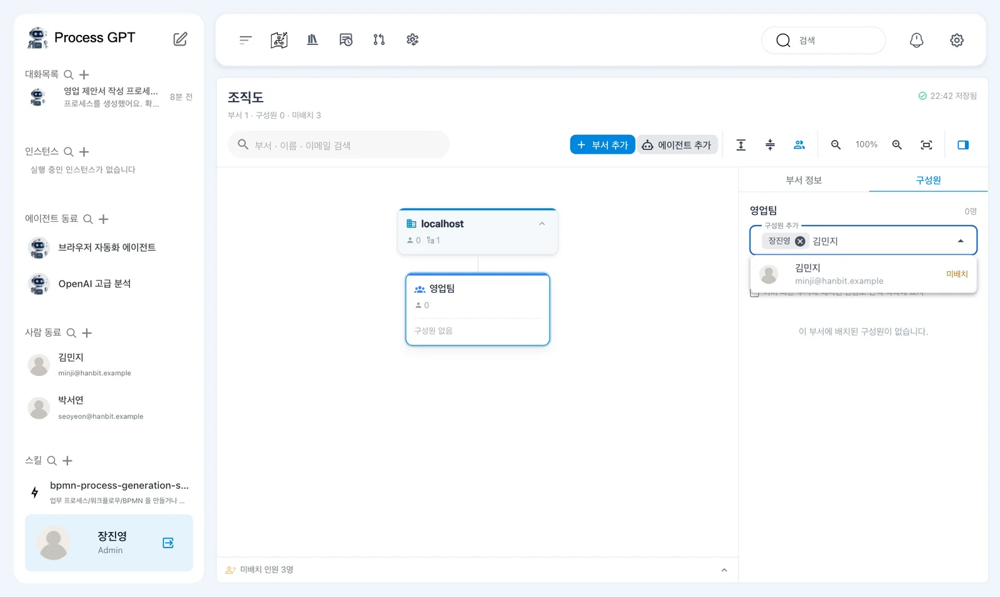
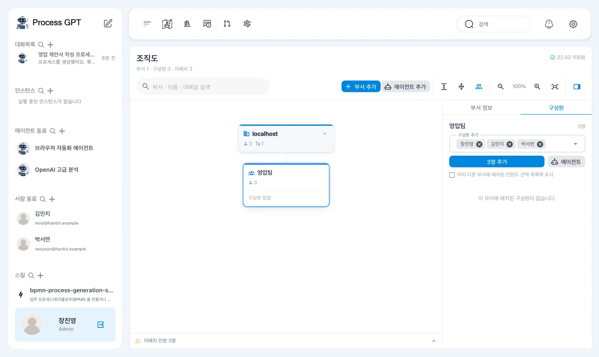
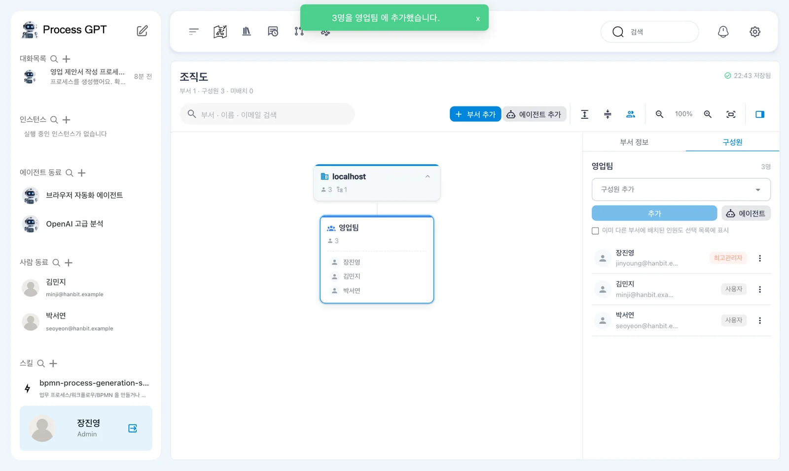
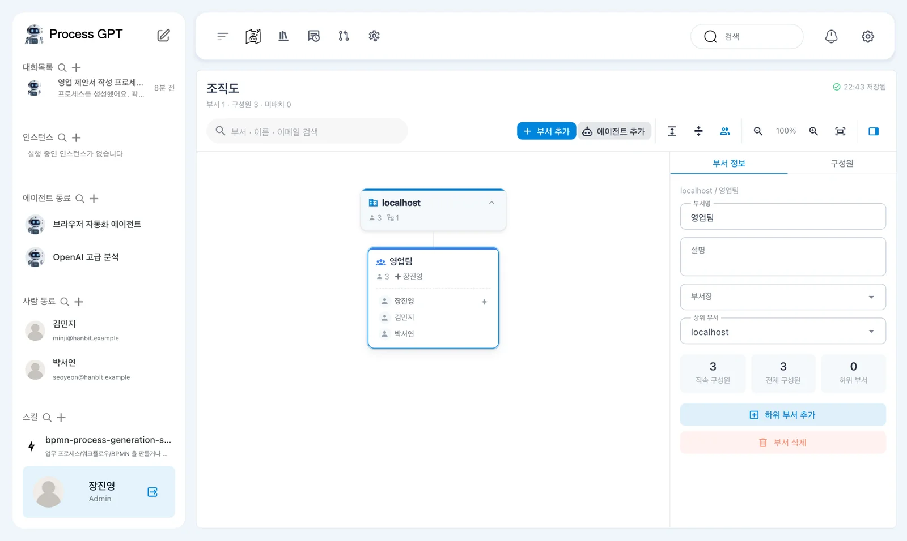
끌어다 놓아도 됩니다
아래쪽 「미배치 인원」의 이름을 부서 카드로 끌어다 놓아도 그 부서에 들어갑니다. 다른 부서로 옮길 때는 ⋮의 「다른 부서로 이동」을 씁니다.
설정의 「사용자 관리」 탭에서도 세 사람의 이름 아래에 「소속 팀 : 영업팀」이 표시됩니다. 장진영에게는 「나」와 「superAdmin」이 보이고, 김민지와 박서연은 「user」입니다.
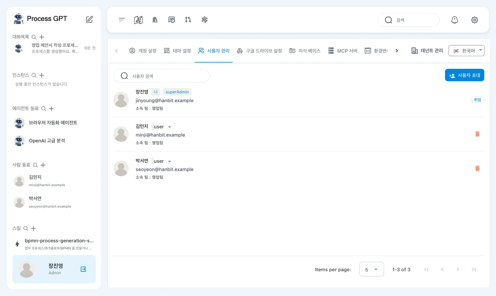
계정 권한과 역할은 다릅니다
구성원 목록의 「최고관리자」 · 「사용자」(사용자 관리의 「superAdmin」 · 「user」)는 계정 권한입니다. 프로세스의 「고객」 · 「영업 담당자」 역할을 뜻하지 않습니다. 역할은 정의의 레인에서 정합니다.
따라 하기 4 — 영업 담당자를 김민지로 정하기#
팀원을 추가했으므로 이제 정의의 레인에서 담당자를 정합니다. 레인에 담당자가 없으면 실행 창이 조직도를 참고해 담당자를 추천하고, 맞는 사람을 고르지 못하면 실행하는 사람을 지정합니다. 김민지가 맡도록 레인에 직접 지정합니다.
- 홈의 프로세스 정의 체계도에서 「영업 제안서 작성」 카드를 누릅니다. 흐름도 위에 「시뮬레이션」 · 「수정」 · 「실행」이 있는 하위 프로세스 화면이 열립니다.
- 「수정」을 누릅니다. 흐름도 왼쪽의 세로 글씨 「영업 담당자」 레인 이름 부분을 두 번 누릅니다.
- 오른쪽 레인 패널에서 「역할 선택」을 봅니다. 처음에는 「없음」입니다.
- 「직접 사용자 선택」을 고릅니다. 새로 나온 「유저 ID」 칸에
김민지를 입력합니다. - 목록의 「김민지 minji@hanbit.example」을 고르면 칩으로 표시됩니다.
- 패널 오른쪽 위 저장 아이콘을 누르고, 닫기(X)로 패널을 닫습니다.
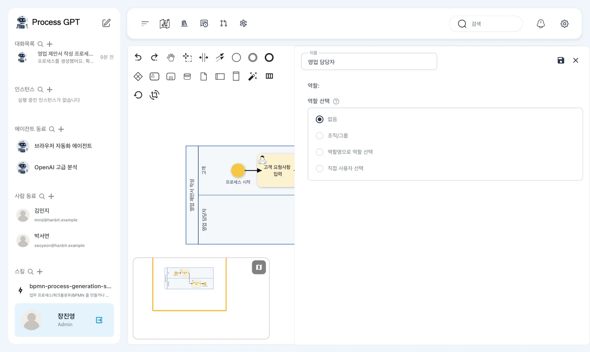
「역할 선택」에는 「없음」 · 「조직/그룹」 · 「역할명으로 역할 선택」 · 「직접 사용자 선택」이 있습니다. 「조직/그룹」을 고르면 조직도의 부서를 고르는 칸이 나옵니다. 이 튜토리얼에서는 「조직/그룹」과 「역할명으로 역할 선택」을 쓰지 않습니다.
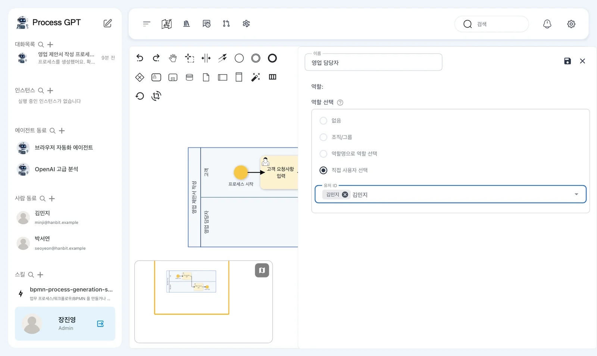
따라 하기 5 — 버전으로 저장하기#
- 정의 화면 오른쪽 위 저장 아이콘을 누릅니다. 「버전 업」 창이 열립니다.
- 「버전 태그」는 「마이너 업데이트」 그대로 둡니다.
- 「설명」에
영업 담당자 역할을 김민지로 지정을 입력하고 「저장」을 누릅니다.
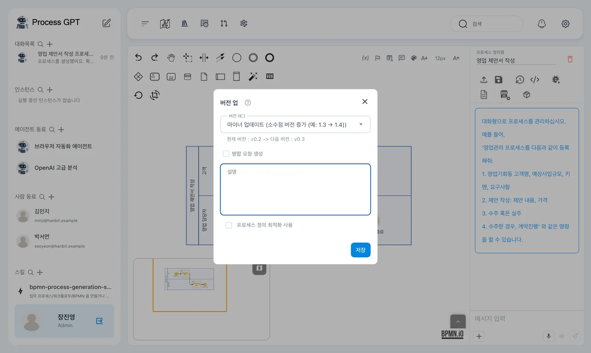
실습에서는 4장에서 두 번 저장했으므로 이번 버전은 v0.3입니다. 버전 숫자는 앞에서 저장한 횟수에 따라 다를 수 있습니다.
따라 하기 6 — 실행 전 역할 확인하기#
- 「영업 제안서 작성」 하위 프로세스 화면에서 「실행」을 누릅니다.
- 실행 창 왼쪽 「역할 지정」을 봅니다. 「고객」은 장진영, 「영업 담당자」는 김민지인지 확인합니다.
- 이번에는 제출하지 않고 닫기(X)로 창을 닫습니다.
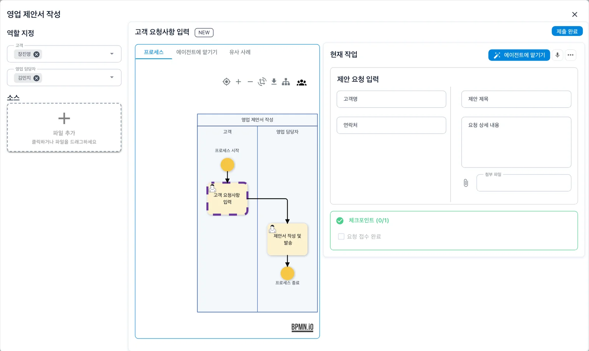
첫 단계 「고객 요청사항 입력」의 역할인 「고객」은 실행 창을 연 장진영이 맡습니다. 실행 창의 역할 칸을 열면 사람이나 에이전트를 골라 이번 실행의 담당자만 바꿀 수도 있습니다. 여기서는 정의에 지정한 김민지가 그대로 표시되는지 확인합니다.
13장의 「한빛오피스 대량 주문 견적 승인」에서도 같은 방법을 씁니다. 그때는 영업팀장 역할에 장진영, 재무 담당 역할에 박서연을 정합니다.
다음 장으로#
영업팀을 만들고 「영업 담당자」를 김민지로 정했습니다. 6장에서는 장진영이 고객 요청을 제출하고, 김민지가 받은 할 일을 처리해 한 건의 실행을 끝냅니다.
확인 문제
- 김민지를 영업팀에 넣으려면 무엇이 먼저 되어 있어야 하나요?
- 구성원 목록의 「사용자」는 「영업 담당자」 역할을 뜻하나요?
- 「영업 담당자」를 김민지로 정해 정의에 남기려면 어디에서 지정하고 저장하나요?
답
- 김민지가 같은 설치본에 가입해 있어야 합니다(또는 「구성원 사전등록」으로 이메일을 미리 등록해 둡니다). 가입한 사람은 처음에 「미배치 인원」에 있습니다.
- 아닙니다. 「사용자」는 계정 권한입니다. 프로세스 역할은 정의의 레인에서 다룹니다.
- 「영업 담당자」 레인 패널에서 「직접 사용자 선택」으로 김민지를 고릅니다. 패널을 저장한 뒤 정의도 버전으로 저장합니다.